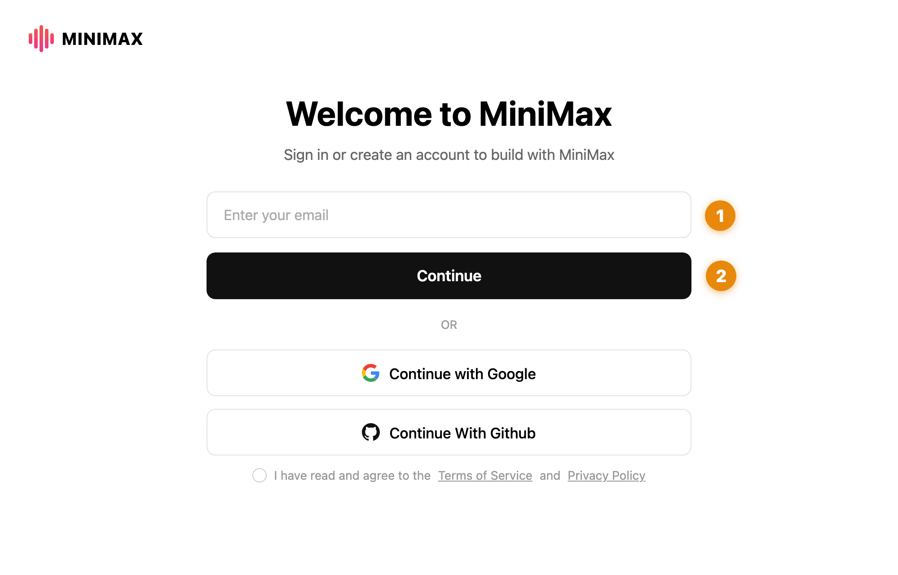
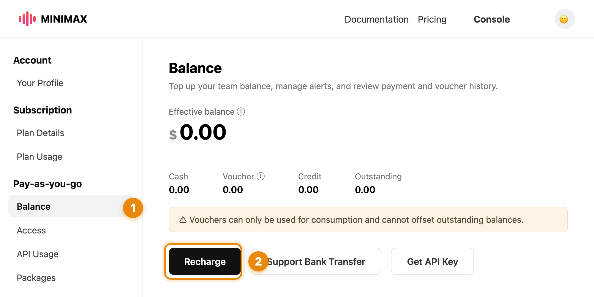
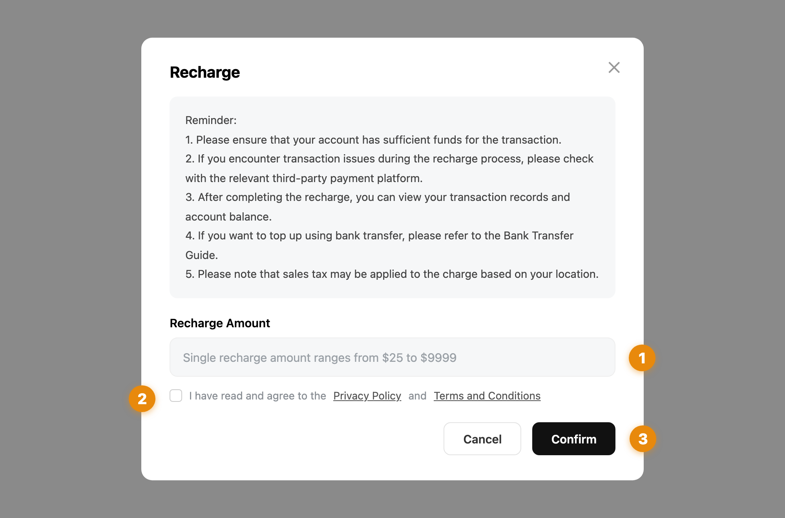

一共四步（外加一个可选项），不用懂电脑，照着点就行。
大概 30–60 分钟，大半是等下载。建议提前两天做，别等上课前一晚。
Four steps (plus one optional), no tech skills needed — just follow along.
Takes 30–60 minutes, mostly waiting for downloads. Do it two days early, not the night before.
要花钱吗?
两笔，都是你自己的账号、你自己付，我不碰：
Does it cost money?
Two things — both on your own accounts, paid by you. I never touch them:
| 多少钱 | 干什么用 | |
|---|---|---|
| Claude 订阅 | 两档： Pro US$20 / 月 Max US$100 / 月 | 这套东西的引擎。建议先订便宜的 Pro，用着看够不够，不够再升 Max |
| MiniMax | 单次最低充 US$25 | 克隆你的声音、配音。一条 60 秒口播只要几分钱，US$25 够配几百条。Windows 同学必须充，Mac 可选（见第 5 步） |
| Cost | What for | |
|---|---|---|
| Claude | Two plans: Pro US$20 / mo Max US$100 / mo | The engine behind everything. Start with the cheaper Pro — upgrade to Max later only if you need it |
| MiniMax | Min. top-up US$25 | Clones your voice for narration. A 60-second voiceover costs a few cents — US$25 lasts hundreds of videos. Required on Windows, optional on Mac (see Step 5) |
Windows 可以吗?
可以。差别只有两处：字幕是整句显示（Mac 能一个词一个词高亮）；配音必须充 MiniMax。其余一样。
Does Windows work?
Yes. Only two differences: captions show line-by-line (Mac highlights word-by-word), and voiceover requires MiniMax. Everything else is identical.
先点一下你的电脑是哪种，下面内容会跟着变Pick your computer type — the steps below adjust automatically
用电脑打开 claude.com/download，下载 Claude Desktop，像装微信一样装好、打开。
用你的邮箱注册账号，然后订阅：先选 Pro（US$20/月）就行，跟着页面提示付款。用着不够以后随时能升 Max（US$100/月）。
随便发它一句话，它回你了，这步就成了 ✓
On your computer, open claude.com/download, download Claude Desktop, and install it like any other app.
Sign up with your email, then subscribe: start with Pro (US$20/mo) and follow the payment prompts. You can always upgrade to Max (US$100/mo) later.
Send it any message. If it replies, this step is done ✓
做视频还需要装几个小工具。你不用认识它们，也不用自己装——点「复制」，粘贴到 Claude 的聊天框里，发送：
Making videos needs a few small tools. You don't need to know what they are or install them yourself — hit Copy, paste into Claude's chat box, and send:
帮我把这台电脑配好做视频的环境：Homebrew（没有就先装）、Node.js LTS、ffmpeg、poppler、whisper-cpp，并把 whisper 模型下载到 ~/.cache/whisper-models/ggml-large-v3-turbo.bin（来源 https://huggingface.co/ggerganov/whisper.cpp/resolve/main/ggml-large-v3-turbo.bin，约1.6GB）。已有的跳过，缺的装上。我不懂电脑，过程里用大白话告诉我进展。装完逐一验证，全部通过就输出一行「✅ 体检通过」加各项版本号；有装不上的，列出来是哪一项、报什么错。
帮我把这台电脑配好做视频的环境，用 winget 安装：Node.js LTS、Python 3、ffmpeg、LibreOffice。装完确认这几样在命令行里能直接调用，不行就帮我把 PATH 配好。我不懂电脑，过程里用大白话告诉我进展。装完逐一验证，全部通过就输出一行「✅ 体检通过」加各项版本号；有装不上的，列出来是哪一项、报什么错。
Please set up this computer for video production: Homebrew (install it first if missing), Node.js LTS, ffmpeg, poppler, whisper-cpp, and download the whisper model to ~/.cache/whisper-models/ggml-large-v3-turbo.bin (from https://huggingface.co/ggerganov/whisper.cpp/resolve/main/ggml-large-v3-turbo.bin, ~1.6GB). Skip what's already installed. I'm not technical — explain progress in plain language. When done, verify each item and print one line "✅ Health check passed" with version numbers; if anything fails, list which item and the error.
Please set up this computer for video production using winget: Node.js LTS, Python 3, ffmpeg, LibreOffice. Make sure each is callable from the command line — fix PATH if needed (and tell me to reopen the window after). I'm not technical — explain progress in plain language. When done, verify each item and print one line "✅ Health check passed" with version numbers; if anything fails, list which item and the error.
然后等它干完，中间你只需要做两件事：
它问「允许吗 / 是否继续」→ 点允许 / 是
它让你输密码 → 输你电脑的开机密码（这是电脑在跟你确认，正常）
Then let it work. You only need to do two things along the way:
It asks "Allow? / Continue?" → click Allow / Yes
It asks for a password → type your computer login password (that's your computer double-checking — normal)
它干完活会自己检查一遍。你要等的就是这个：
When it finishes, it checks its own work. This is what you're waiting for:
看到 ✅ = 装完了，截图发我。
✅ means you're done — screenshot it and send it to me.
没看到 ✅，或者它说有东西装不上？把那一屏截图发我，别自己琢磨，两分钟的事。
No ✅, or something failed to install? Screenshot that screen and send it to me — don't troubleshoot alone. It's a two-minute fix.
装 Chrome 浏览器（已经有就跳过）。
装 WhatsApp 电脑版，登录好，发条消息试试能不能用——上课要用它找盘、问价。
这两个也可以偷懒：直接在 Claude 里发「帮我装 Chrome 和 WhatsApp 桌面版」，装完你自己登录就行。
Install Chrome (skip if you have it).
Install WhatsApp Desktop, log in and send a test message — we'll use it in class for listings and enquiries.
Shortcut: just tell Claude "install Chrome and WhatsApp Desktop for me", then log in yourself.
MiniMax 是配音引擎——上课时我们会用它克隆你的声音，之后视频旁白都用你自己的声音出。
有它，一条 60 秒的配音几十秒就出来；Mac 上没有它也能出声（用免费本地引擎，但一条配音要等半小时起步）。Windows 同学没有备选，必须弄。
声音克隆在你自己的账号里，授权和账单都在你手上。
MiniMax is the voiceover engine — in class we'll use it to clone your voice, so every video narrates in your own voice.
With it, a 60-second voiceover takes seconds to generate; on Mac there's a free local fallback, but it takes 30+ minutes per voiceover. On Windows there is no fallback — you need this.
Your voice clone lives in your own account — you hold the authorization and the billing.
打开 account.minimax.io，填邮箱点 Continue（或直接用 Google 账号登录），跟着提示完成注册。
Open account.minimax.io, enter your email and hit Continue (or sign in with Google), then follow the prompts.

登录后打开 platform.minimax.io，点右上角 Console，左边栏找到 Pay-as-you-go → Balance，点黑色的 Recharge 按钮。
Once signed in, open platform.minimax.io, click Console (top right), find Pay-as-you-go → Balance in the left sidebar, and hit the black Recharge button.

金额填 25（单次最低 US$25，配几百条视频没问题），勾同意，点 Confirm，用银行卡付款。
完了。声音克隆和接入都在上课时我带你弄，今天只要账号里有钱就行。
Enter 25 (US$25 is the minimum single top-up — enough for hundreds of videos), tick the agreement, hit Confirm, and pay by card.
Done. Voice cloning and setup happen together in class — today you just need money in the account.
